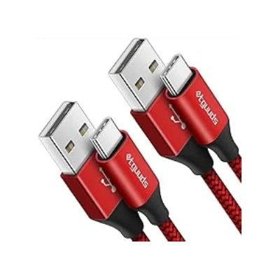
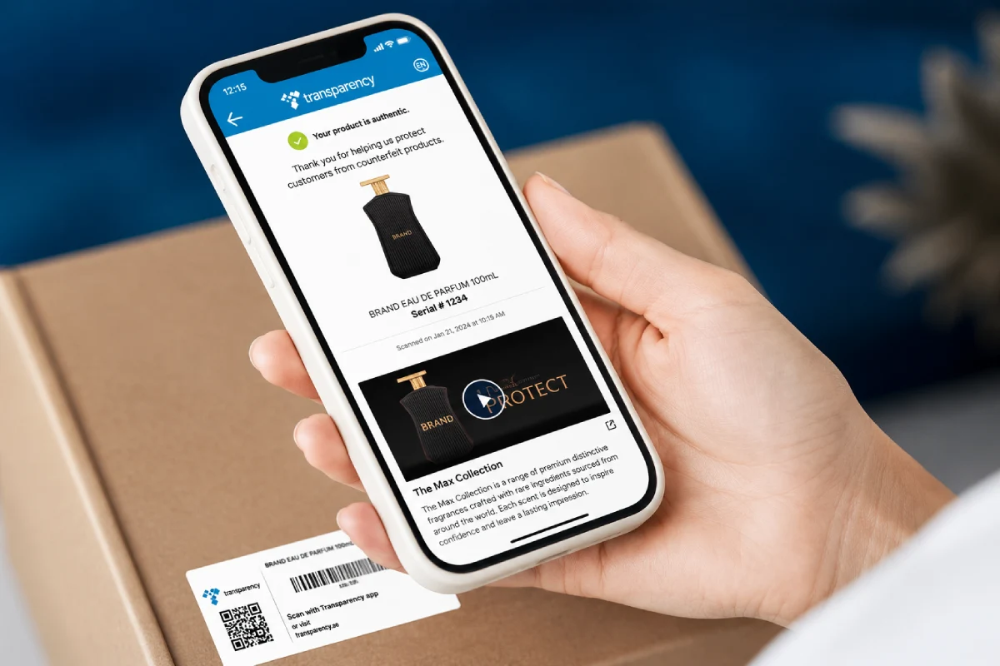

Phone chargers
Trust signal check

Amazon Transparency helps brands reduce counterfeit risk, build customer trust, and create a more verifiable product experience across the purchase and post-purchase journey.

Transparency had a strong anti-counterfeiting promise, but that value was not obvious enough in the customer experience.
The challenge was to bring meaningful trust signals into high-visibility moments without adding friction or confusion. I helped define the language, flows, and visual treatments needed to make the program understandable, credible, and worth engaging with.
Research clarified how trust should be introduced, explained, and reinforced over time.
A common pattern across the analysis was the use of familiar iconography and similar color palettes to build trust with users.
Lean Canvas helped the team align around assumptions, opportunity framing, and testable design decisions.
Mapping the flow helped clarify how customers moved from product discovery to verification.
Final designs emphasized clearer explanations, accessibility, iconography, and alignment with Amazon design system branding.
Edited clips from six customer interviews used to evaluate Transparency messaging, scan expectations, and post-authentication value.
Figma prototypes used in roundtables and UserTesting sessions to evaluate scan entry points, messaging, and post-authentication experiences.
Research summary from customer interviews, including findings, quotes, and recommendations that shaped the Transparency scan experience.
The strongest finding was that the initial message, “Verify with Transparency,” was too vague on its own.
Once participants saw progressive explanation and understood how the program could help them verify a product, sentiment improved significantly. That insight shaped the final content strategy and how the experience introduced value over time.
“The scanner is excellent for verification purposes and offers additional opportunities for future enhancements.”
“It’s compelling when there’s a problem, and I need proof to decide if I need to escalate the issue.”
Search, Detail, Progress Tracker, Amazon Lens, and content design improvements contributed to measurable gains for products enrolled in the Transparency program.
By making the program easier to understand and more credible in context, the experience helped strengthen trust signals and improve customer behavior in key moments of the journey.
↗ Back to work